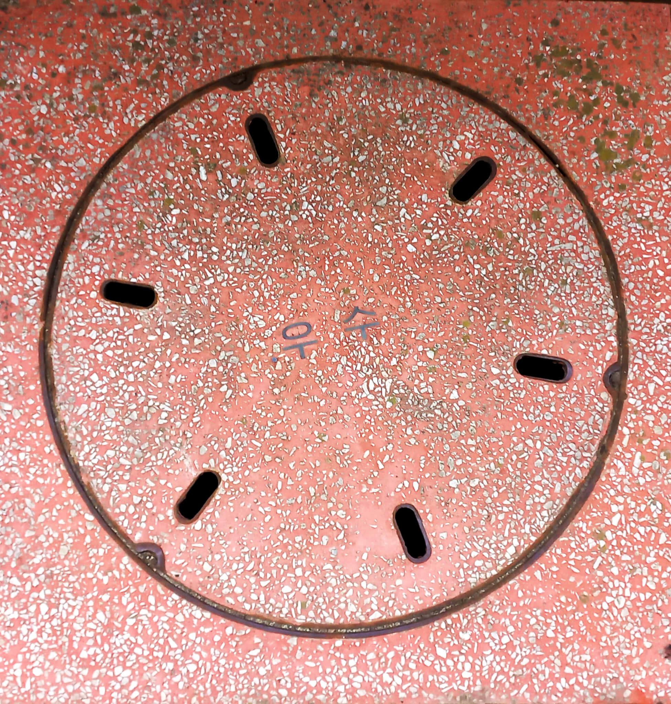

소재
주철, 유리 강화 플라스틱
- 오수:가정에서 버려진 물
- 우수:빗물, 고인물
- 폐수:이미 사용,못쓰는 물
등장배경
최초의 맨홀 뚜껑은
기원전 3500년경이다.
근대 하수도 시스템과 등장
시공 방식
- 위치를 정하고 설계한다.
- 땅을 깊게 판다.
- 콘크리트 자리를 만든다.
- 땅을 판 곳에 맨홀통을 설치
- 하수도, 전선, 통신관을 연결한다.
- 흙을 다시 채우고 꾹꾹 눌러서 다듬는다.
- 도로 높이에 맞춰 맨홀뚜껑을 굴려서 올린다.
- 콘크리트, 아스팔트로 도로를 포장한다.
